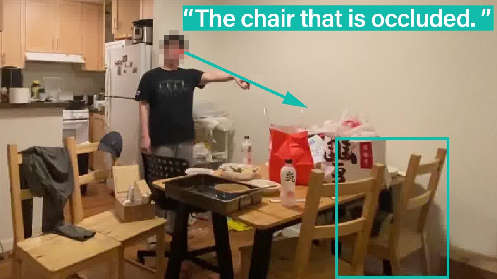

Abstract
We study embodied reference understanding, the task of locating referents using embodied gestural signals and language references. Human studies have revealed that objects referred to or pointed to do not lie on the elbow-wrist line, a common misconception; instead, they lie on the so-called virtual touch line. However, existing human pose representations fail to incorporate the virtual touch line. To tackle this problem, we devise the touch-line transformer: It takes as input tokenized visual and textual features and simultaneously predicts the referent’s bounding box and a touch-line vector. Leveraging this touch-line prior, we further devise a geometric consistency loss that encourages the co-linearity between referents and touch lines. Using the touch-line as gestural information improves model performances significantly: Experiments on the YouRefIt dataset show our method achieves a +25.0% accuracy improvement under the 0.75 IoU criterion, closing 63.6% of the gap between model and human performances. Furthermore, we computationally verify prior human studies by showing that computational models more accurately locate referents when using the virtual touch line than when using the elbow-wrist line.